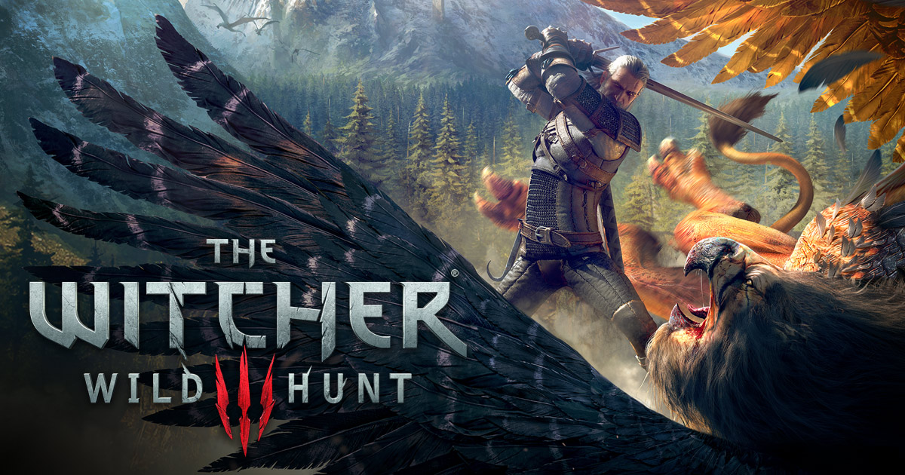

Assuma o papel da habilidosa caçadora Aloy ao explorar um mundo exuberante habitado por criaturas misteriosas em um novo e emocionante jogo de ação/RPG em mundo aberto exclusivo para o sistema PlayStation 4.
Um exuberante mundo pós-apocalíptico. Como as máquinas dominaram esse mundo e o que pretendem? O que aconteceu com a civilização que habitava esse lugar? Vasculhe cada canto de um reino repleto de relíquias antigas e construções misteriosas para desvendar o passado e desenterrar os vários segredos de uma terra esquecida.
O combate em Horizon Zero Dawn tem como base a velocidade e perspicácia de Aloy contra a força bruta e o tamanho das máquinas. Para vencer um inimigo muito maior e tecnologicamente superior, Aloy deve usar todo o seu conhecimento, além de sua inteligência e agilidade, para sobreviver a cada confronto.
Torne-se um mercenário caçador de monstros e embarque em uma épica jornada para encontrar a criança da profecia, uma arma viva capaz de incríveis destruições.
Os dragões, há muito tempo esquecidos nas passagens de Elder Scrolls, retornaram para Tamriel e o futuro do Império está em perigo. Como Dragonborn, o herói das profecias que nasceu com o poder da Voz, você é o único que pode impedi-los.